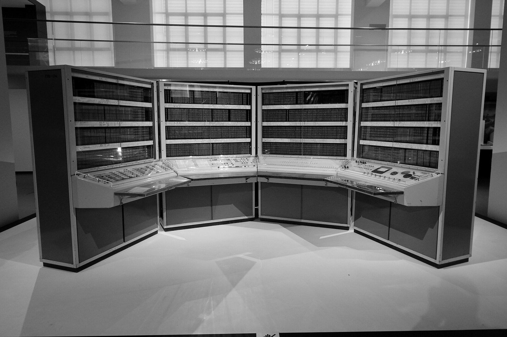
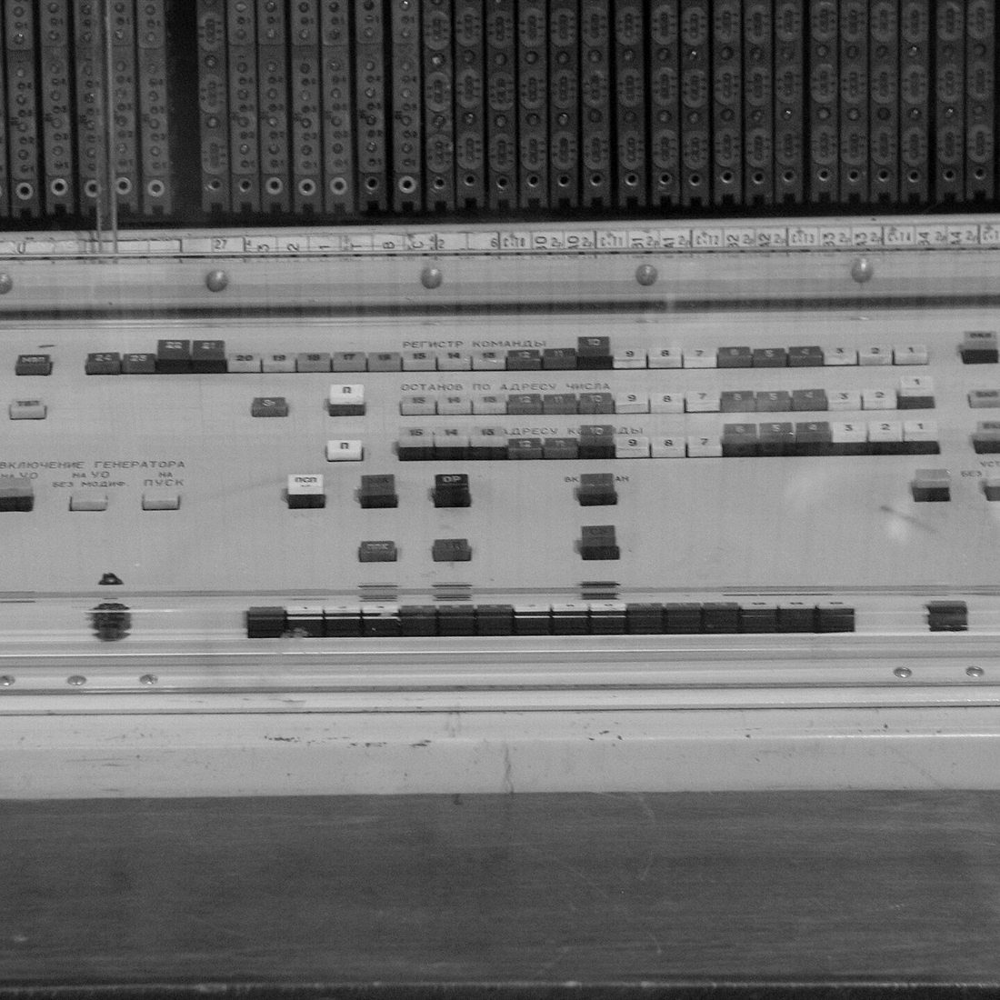

Left-left
30, 20, 10
One right rotation
Named for Georgy Adelson-Velsky and Evgenii Landis, who published it in 1962.
A binary search tree that rotates itself back into balance after every insert and delete. This one runs in C, and you can watch every step.
Insert a keyThe heights of a node’s two subtrees may differ by one at most. When an insert or a delete breaks that, a rotation puts it right.
Keys 1 to 15, inserted in order, into both trees at once.
Give a plain binary search tree sorted keys and it grows into a stick fifteen levels tall. The AVL tree takes the same keys, rotates as it goes, and ends four levels tall.
Click any node to pick its key, then delete it or search for it.
Type one key or several, then step through what the C code did: each comparison, each height update, each rotation. Delete, search and the four traversals work the same way.
ten keys, then 27
Loading the C module.
insert_at, in avl.c
1 / 1
Result
ten keys, then 27
keys in order
Press play on a case to run it in the visualiser.
When one side runs two levels taller, the shape of the lean picks the fix. A straight lean takes one rotation; a bent one takes two.
30, 20, 10
One right rotation
10, 20, 30
One left rotation
30, 10, 20
Left at 10, then right
10, 30, 20
Right at 30, then left
Drag the slider to grow the tree. The figures are worst cases: the tallest each kind of tree can get with that many keys.
Source, bridge and tests are all in this site’s src and test folders.
avl.c keeps the tree in a fixed array of thirty-one nodes, with no malloc. It is compiled to WebAssembly, and the page only draws the steps the C code reports.


// every step is logged with a snapshot
static int rotate_right(int y) {
int x = node[y].left;
node[y].left = node[x].right;
node[x].right = y;
update_height(y);
update_height(x);
rotations++;
return x;
}// the page calls into the C module
const tree = await AVL.Tree.create();
const steps = tree.insert(27); // avl_insert, in C
steps[0].type; // 1, EV_START
steps.at(-1).d; // rotations, from EV_DONE// 20,030 checks against a plain array, none failed
case_rotation("left-left (30, 20, 10)", 30, 20, 10, 1);
case_rotation("right-right(10, 20, 30)", 10, 20, 30, 1);
case_rotation("left-right (30, 10, 20)", 30, 10, 20, 2);
case_rotation("right-left (10, 30, 20)", 10, 30, 20, 2);Runs avl_check() on the tree in the visualiser.